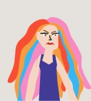
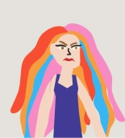

I dette tema lærte jeg at bruge keyframes og JavaScript. Ved hjælp af css egenskaber som
animation-duration,
animation-timing-function, animation-iteration-count kunne jeg styre hvor lang en animation skulle være,
hvor hurtigt
den går og hvor mange gange en animation kører.
Jeg lærte at bruge Javascript til at skabe en dynamisk hjemmeside man, som bruger kan interagere med ved
hjælp af
EventListener og classList herved kan jeg fjerne eller tilføje en funktion afhængigt af hvordan jeg vil
have spillet
skal forløbe. Jeg havde lidt problemer med JavaScript og det var svært for mig at finde mine fejl i
koden. Det var svært
at gennemskue hvorvidt problemerne var i css ‘ens, i keyframes eller i Java scriptet. Men nu forstår jeg
grundprincippet
i JavaScript og næste gang vil det være nemmere at tilgå.
I tema 4 skulle vi animere og integrerer Javascript som en afgørende del af vores kodning. I temaet
lærte
vi om
Game
Mechanics der betegner spillets regler, elementer og andre processer der danner rammen for spillet. Her
gjorde
jeg brug
af storytelling principper ved hjælp af design af hovedkarakteren der udtrykte personlighed afhængigt af
om man
vandt
eller tabte
 


Jeg var ikke helt ukendt i Illustrator og Photoshop da jeg tidligere har gået på højskole hvor jeg blev introduceret til det, dog skulle jeg lige ind i tankegang igen og det at elementerne skulle illustreres helt specifikt til et spil og forholde sig til størrelse og former og dybden i baggrunden var udfordrende, men også virkelig spændende.
Jeg har lært at visualisere hvordan Java scriptet fungerer og hvordan de forskellige komponenter påvirker
hinanden.F.eks. cyklussen når man har stadig har liv tilbage eller hvis spillet slutter eller man får
flere
point.
Jeg skulle vænne mig til at lave funktionerne i min JavaScript ud fra mit State Machine Diagram. Men da
jeg var lidt
længere i processen, var det godt at kunne vænne tilbage til diagrammet.
For mig var det ved hjælp af aktivitetsdiagrammet en meget overskuelig måde at visualisere hele
spil-processen på, når jeg
først forstod de forskellige symboler for når tiden var gået, når spillet var slut eller de parallelle
veje man kan gå
afhængigt af spillets forløb.
Det var en udfordring at styre figurelementerne i JavaScript med
point
og liv da de to
figurelementer ikke havde den samme adfærd.